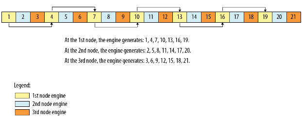

2.4.4.1. onemkl::rng::leapfrog¶
Proceed state of engine using the leapfrog method.
Syntax
-
template<typename
EngineType>
voidleapfrog(EngineType &engine, std::uint64_t idx, std::uint64_t stride)¶
Include Files
mkl_sycl.hpp
Input Parameters
Name |
Type |
Description |
|---|---|---|
engine |
|
Object of engine class, which supports leapfrog. |
idx |
|
Index of the computational node. |
stride |
|
Largest number of computational nodes, or stride. |
Description
The onemkl::rng::leapfrog function generates random numbers in an engine with non-unit stride. This feature is particularly useful in distributing random numbers from the original stream across the stride buffers without generating the original random sequence with subsequent manual distribution.
One of the important applications of the leapfrog method is
splitting the original sequence into non-overlapping subsequences
across stride computational nodes. The function initializes the
original random stream (see Figure “Leapfrog
Method”) to generate random numbers for the
computational node idx, 0 ≤idx < stride, where stride is
the largest number of computational nodes used.
Leapfrog Method
The leapfrog method is supported only for those basic generators that allow splitting elements by the leapfrog method, which is more efficient than simply generating them by a generator with subsequent manual distribution across computational nodes. See VS Notes for details.
The following code illustrates the initialization of three independent streams using the leapfrog method:
Code for Leapfrog Method
...
// Creating 3 identical engines
onemkl::rng::mcg31m1 engine_1(queue, seed);
onemkl::rng::mcg31m1 engine_2(queue, engine_1);
onemkl::rng::mcg31m1 engine_3(queue, engine_1);
// Leapfrogging the states of engines
onemkl::rng::leapfrog(engine_1, 0 , 3);
onemkl::rng::leapfrog(engine_2, 1 , 3);
onemkl::rng::leapfrog(engine_3, 2 , 3);
// Generating random numbers
...
Parent topic: Service Routines